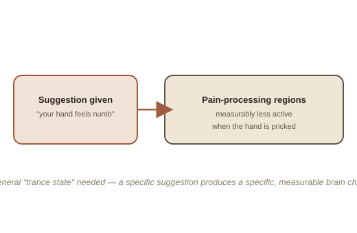

Chapter 1: Real Effects, a Retired Explanation
Stage hypnosis has done real damage to how hypnosis gets taken seriously — a volunteer clucking like a chicken on command looks like pure theater, and a lot of it is. But strip away the showmanship and a separate, genuinely studied phenomenon remains: hypnosis reliably produces measurable changes in perception, pain processing, and behavior in a meaningful share of people, confirmed with brain imaging, not just self-report. What's changed in recent decades isn't whether hypnosis "works" — it's the explanation for why.
The trance model researchers have mostly abandoned
The old, popular model treated hypnosis as inducing a special, distinct trance state (a supposed altered state of consciousness, different from both normal waking attention and sleep, in which a person becomes unusually receptive to suggestion) — something categorically different from ordinary consciousness, with its own brain signature. Decades of brain-imaging research have failed to find a consistent, distinct "trance" signature separating hypnotized from non-hypnotized states. What imaging studies do find is more specific and, in a way, more interesting: hypnotic suggestion can produce real, localized changes in brain activity that match the content of the suggestion — a suggestion that a hand feels numb genuinely reduces activity in pain-processing regions when that hand is later pricked, measurably, not just as a reported feeling.

Focused attention and expectation, not a special state
The modern working model, associated with researchers like clinical psychologist Michael Yapko, treats hypnosis less as a mysterious separate state and more as an unusually focused, absorbed form of ordinary attention, combined with a genuine, temporarily suspended sense of critical evaluation toward suggestions — closer to being deeply absorbed in a gripping film or book than to sleep or unconsciousness. On this model, what makes hypnosis distinctive isn't the state itself, but the deliberate, structured use of suggestion within it — the same basic mechanism, arguably, behind a placebo's effect, just applied more directly and with more explicit instruction.
Where it's genuinely used clinically
Hypnotherapy has real, replicated clinical evidence in a narrower set of uses than its popular reputation suggests: it has decent support for pain management (including during childbirth and some medical procedures), for irritable bowel syndrome symptoms, and as an adjunct for smoking cessation and anxiety. It does not have strong support for many of its more dramatic popular claims — recovering "repressed" memories being the most seriously discredited one, given how easily suggestive questioning under hypnosis can implant false memories rather than recover real ones.
Try this
Ideas for noticing or testing this in your own life.
- Notice ordinary "hypnosis-adjacent" absorption: next time you're completely absorbed in a movie, book, or workout and lose track of time or minor discomfort, notice how close that focused, suggestible state already feels to the modern description of hypnosis — no trance required.
- Try applying the suggestion-and-expectation model to placebo: next time you take a pain reliever, notice whether relief seems to arrive faster than the drug could plausibly act — a small, ordinary example of expectation shaping a real physiological response.
Worth pulling on?
A few loose threads from this chapter — if any of these genuinely grab you, that's a good sign of where to go next.
- Hypnotic susceptibility is a fairly stable individual trait — about 10-15% of people are highly responsive, a similar share are almost entirely unresponsive, and most people fall somewhere in between, tested with standardized scales that have held up for decades.
- Recovered-memory therapy using hypnosis contributed directly to a wave of false abuse allegations in the 1980s and 90s. → Already in the library: Memory and Its Unreliability covers that history in more detail.
- The same suggestion-and-expectation mechanism is the leading explanation for the placebo effect. → Already in the library: Placebo & Nocebo Effects covers that directly.